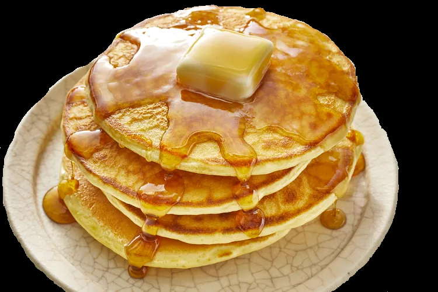

This recipe is my favorite, I always used it when making pancakes, it is simple, easy to follow, and it makes the best tasting pancakes I could find!

Ingredients
1 Cup (180ml) whole-wheat flour.
1/2 Cup (125ml) quick cook oats.
1/2 Cup (125ml) all-purpose flour.
1 1/2 Tsp (7ml) baking powder.
2 Eggs.
1 Cup (250ml) buttermilk.
1 Cup (250ml) low fat milk. (2% or less M.F.)
2 Tbsp (30ml) brown sugar.
1 Tsp (5ml) pure vanilla extract.
1/3 Cup (80ml) Nutella.
2 Bananas, sliced.
Instructions
In a large bowl, whisk together whole-wheat flour, oats, all-purpose flour and baking powder well. In a smaller bowl, whisk together eggs, buttermilk, milk, brown sugar and vanilla until sugar is dissolved.
Pour egg mixture into flour mixture and whisk just to combine.
Heat a non-stick griddle or frying pan sprayed with cooking spray over medium heat. Spoon small dollops of batter (approx. 2 to 3 tbsp) onto the pan and cook until small bubbles appear on the edge of the pancake and the surface appears slightly dry. Flip and cook the other side until lightly golden brown.
Spread each pancake with a little Nutella. Layer a few slices of banana on each pancake and then stack three or four of them one on top of the other. Serve with a glass of milk or 100% fruit juice.